← Índice de los 69 tutes de IDA
Tute 28 · Teoría de repaso
INTRODUCCIÓN AL REVERSING CON IDA PRO DESDE CERO PARTE 28
UN POCO DE TEORIA.
Como siempre vamos alternando algo de teoría con los ejercicios de práctica para tratar de afianzarnos poco a poco e ir avanzando.
En esta parte veremos algunos temas teóricos sin tratar de ser muy técnicos ni pesados, sobre temas que hay que conocer.
Hemos visto que cuando definimos una variable por ejemplo:
int pepe=4;
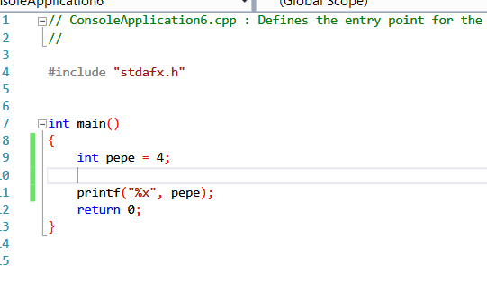
Se reservarán en una posición de memoria el espacio necesario para guardar en este caso un entero o sea 4 bytes y luego cuando se asigna el valor 4, tendremos en una dirección de memoria el valor 4 de pepe guardado.
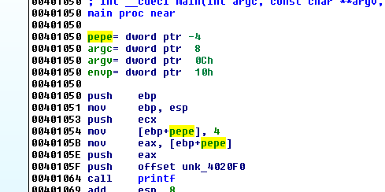
Allí vemos ese caso la variable int pepe y como la inicializa a 4, si arrancamos el debugger y ponemos un breakpoint aquí
.
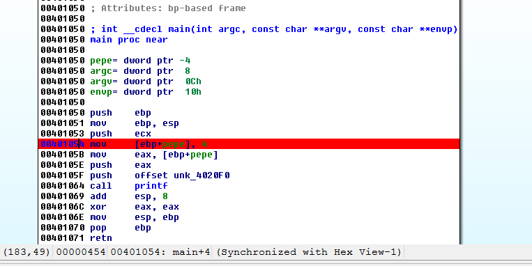
Y arrancamos el debugger LOCAL WIN32 DEBUGGER.
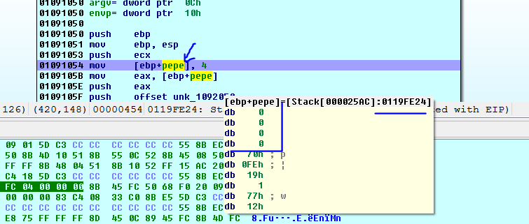
Cuando para allí si ponemos el mouse encima de pepe, vemos la dirección de memoria donde están reservados los 4 bytes para el entero que se supone que almacenará.
Si hago click allí en pepe iré a ver(la dirección no coincidirá con la suya)
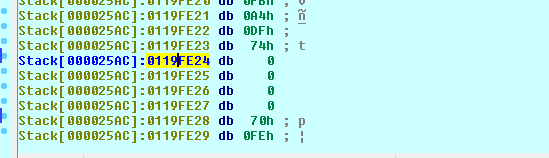
Como es un entero puedo allí apretar D hasta que cambie a DD o sea DWORD.
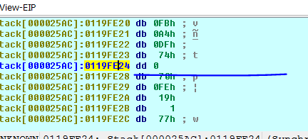
Allí está marcado como DWORD y con cero porque aún no guardo el valor 4, si ejecuto la instrucción que lo guarda y vuelvo a mirar.
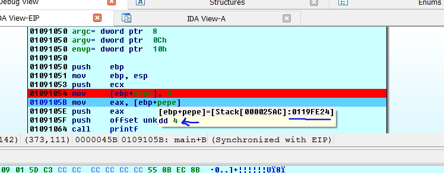
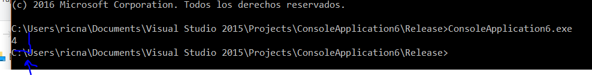
No se imprime hasta que no termina y se cierra, así que si lo ejecuto en una consola veo el 4 que es el valor de pepe.
EJEMPLO1.exe
Allí lo tienen como EJEMPLO1.exe
Lo que vemos es que siempre que hay una variable habrá un valor y una dirección, en mi caso el valor de pepe era 4 y la dirección de pepe era 0x119fe24.
Ahora cambiare el código para que no solo imprima el valor de pepe sino su dirección.
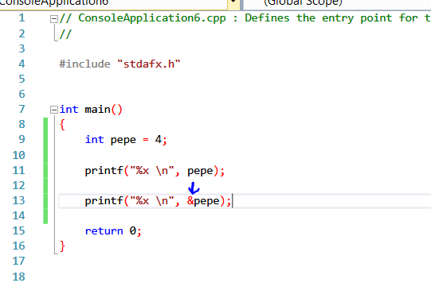
EJEMPLO2.EXE
Si lo abrimos en IDA a este EJEMPLO2
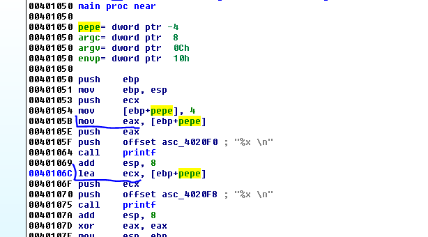
Vemos los dos print el primero mediante MOV pasa el valor 4 de pepe a EAX y luego lo imprime, y en el segundo print con LEA halla la dirección de pepe y la imprime.
Si pongo un breakpoint en el mov.
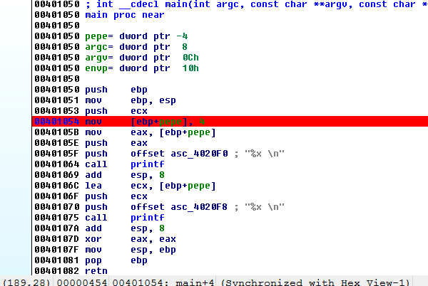
Arranco el debugger.
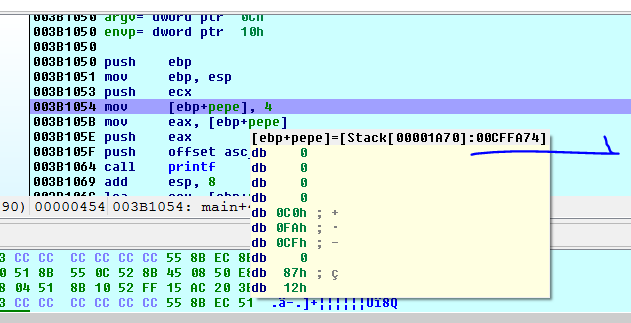
En este caso la dirección de pepe en mi máquina será 0xCFFA74 voy allí y apretando D cambio a DWORD.
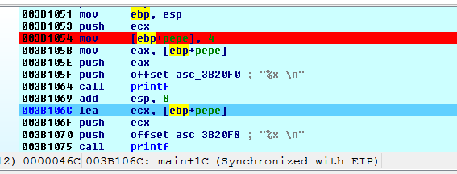
Llego hasta el LEA si pongo el mouse sobre pepe, veo que ya está guardado el valor 4, al ejecutar el LEA.
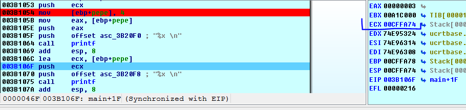
Veo que ahora ECX tiene la dirección de pepe que es lo que imprimirá en segundo lugar si lo corremos fuera de IDA veremos cómo imprime, en cada tiro la dirección cambiara pero imprimirá el valor y la dirección actual de pepe.
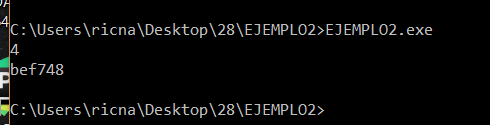
Vemos que en cada caso sea un entero, sea un buffer, una estructura o el tipo de dato que sea tendremos una dirección donde está guardado (o donde comienza si es un buffer o estructura) y un valor que es el contenido que se aloja allí.
PUNTEROS.
Como hay muchos tipos de datos, existe un tipo de datos más que sirve para guardar y manejar direcciones de memoria, se llama puntero.
Un puntero es tan solo un tipo de datos más, como int almacena enteros, char caracteres o float almacena números de punto flotante, pues los punteros almacenan direcciones de memoria.
Por ejemplo en el caso anterior qué pasaría si en vez de imprimir la dirección de pepe, quisiera guardarla, como es una dirección de memoria, debería usar otra variable de tipo puntero que la guarde.
int * jose;
se diferencia de
int jose;
en que este último es una variable del tipo entero, mientras que el primero es una variable del tipo puntero que guarda direcciones de memoria que apuntan a enteros.
O sea no solo al definir un puntero, definimos una variable que guarda una dirección de memoria, sino que le decimos esa dirección de memoria, a qué tipo de dato apuntara, si trato de guardar un puntero a otro tipo de dato en este caso fallará.
En el ejemplo anterior.
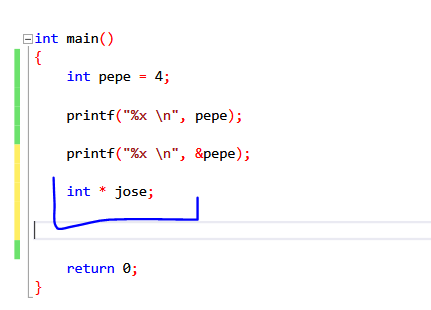
Vemos que jose sería un puntero a un entero pero aún no tiene asignado ningún valor, podría asignarle la dirección de memoria de pepe, cuyo valor es un entero, con lo cual cumplimos ambos puntos, que guarde una dirección de memoria y que dicha dirección apunte a un int.
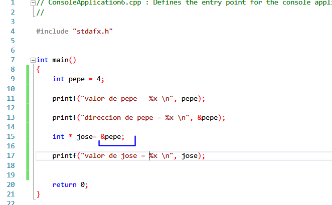
Allí vemos que le asignamos a jose la dirección de memoria de pepe que como es un int estará bien, coinciden los tipos.
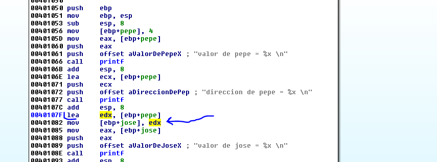
Allí ocurre eso, halla la dirección de pepe con LEA y la guarda en jose que como es un puntero sirve para guardar direcciones de memoria de variables o argumentos y como dicha variable es un entero, está todo bien , imprimirá el valor de jose que será igual a la dirección de pepe.
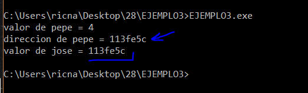
Allí lo vemos y entendemos que un puntero sirve para eso, para almacenar y trabajar con direcciones de memoria de variables o argumentos.
PSEUDOCODIGO.
El pseudocódigo de la función apretando F5.
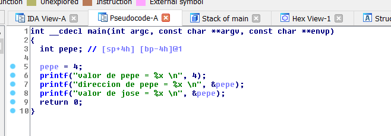
No nos muestra la variable jose pues para economizar directamente usa &pepe en vez de jose.
Trataremos de forzarlo cambiando el código en el siguiente ejemplo.
Cuando se llega a esta punto uno dice, pero bueno qué diferencia hay para tener que crear un tipo de dato especial que guarde direcciones de memoria, no podría usarse un int y que guarde allí la dirección?
Sería algo así, quitando el asterisco a la definición de jose será un entero, y si allí quiero guardar la dirección de pepe.
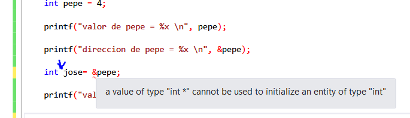
No me deja me da error, así que, no queda otra que usar punteros jeje.
Los punteros además me permiten leer cambiar y trabajar con los valores a los cuales apuntan.
José guarda la dirección de memoria de la variable pepe y este vale 4 con lo cual quedan relacionados entre sí, si hago.
*jose = 8;
Se usa el asterisco no solo para definir un puntero, sino también para acceder al contenido al que apunta(en este caso se llama indirección).
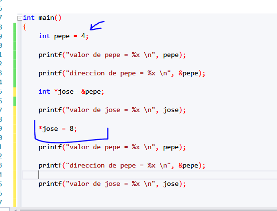
Y como el valor de jose es la dirección de memoria de pepe, jose es un puntero que apunta al valor de pepe o sea el 4 si lo cambio a 8, cambiare el valor de pepe también.
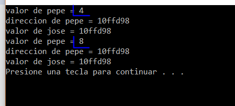
Vemos que cambiando el contenido de jose, afectamos el valor de pepe, lo cual es lógico, pues jose tiene como valor la dirección de memoria de pepe y apunta allí, al ahora 8.
Veámoslo en IDA a ver que muestra.
Es importante y por eso paso los ejemplos compilados que entiendan bien esto, y que debuggeen y constaten hasta estar seguros.
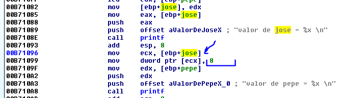
Vemos que lee jose que es la dirección de pepe, y guarda en el contenido el valor 8, si debuggeamos desde el principio.
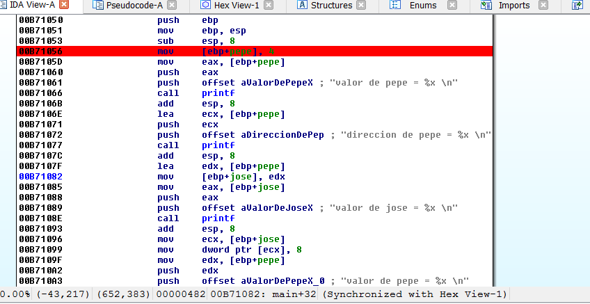
Arrancamos el debugger.
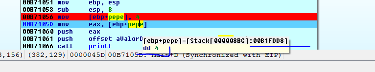
Luego que guarda el 4 vemos la dirección de pepe en mi caso 0xB1fd88 y el valor de pepe 4.
si sigo traceando.
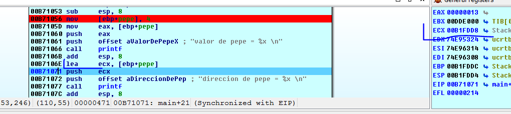
Allí con LEA obtiene la dirección de pepe, que queda en ECX y la imprime, sigo traceando.
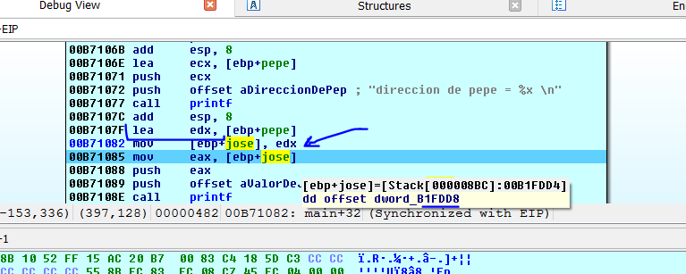
Luego de que guarda en jose la dirección de pepe, vemos allí que guardo 0xB1Fdd4 que pasará a ser el valor de jose. (la misma dirección de memoria de pepe).
Vemos como habíamos dicho que IDA muestra esa dirección como
OFFSET DWORD 0xB1Fdd4
Habíamos dicho que OFFSET en IDA significaba una dirección de memoria y el DWORD que está al lado significa que apunta a un DWORD (int).
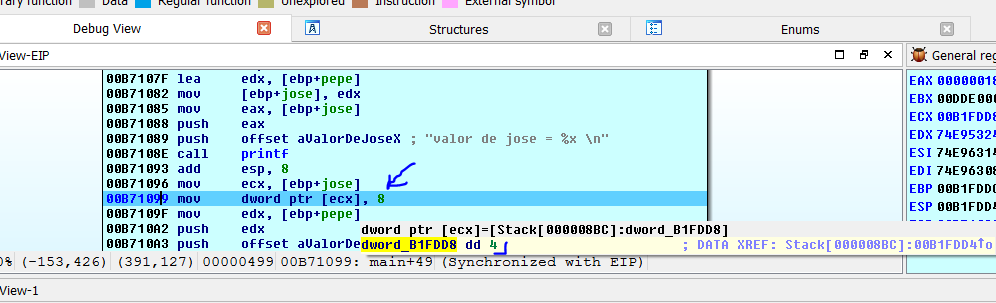
Allí pasa el valor de jose a ECX y guarda en su contenido el 8, donde antes estaba el 4. obvio que el contenido de jose es el valor de pepe, el cual imprime luego.
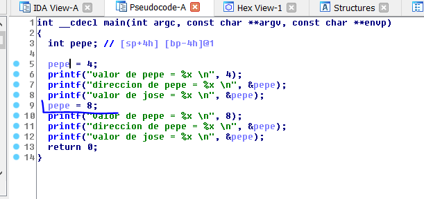
Vemos que el pseudocódigo sigue trabajando siempre con pepe y no muestra el puntero jose, directamente en vez de usar punteros, usa modificar directamente el valor de pepe lo cual funciona pero no es el código original.
Obviamente
pepe =8
es igual que
*jose=8
Pero no usa el puntero jose.
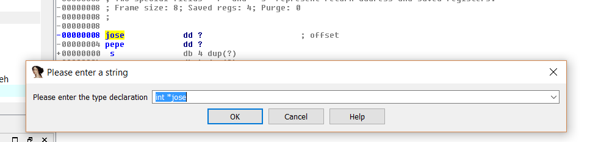
Apretando la Y nos permite definir manualmente una variable, y le pongo que es un puntero a un int.
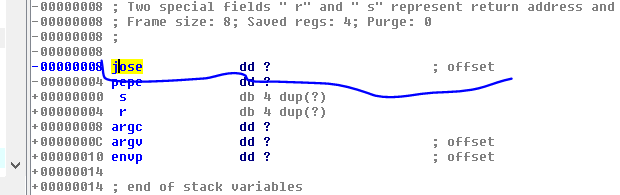
Igual el pseudocódigo no muestra cambios, de cualquier forma el código que genera es una aproximación y optimiza mucho para aclarar, lo cual no se puede tomar como la verdad revelada jeje.
Veamos el siguiente ejemplo que es un caso donde los punteros son más útiles, cuando hay que pasarle argumentos a una función.
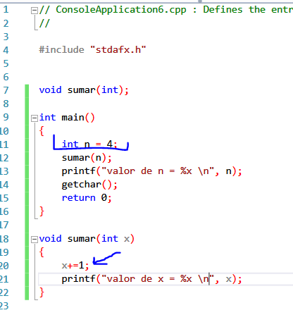
Vemos que definimos un entero n que vale 4 y le pasamos el valor a una función sumar, dicha función asigna el 4 a la variable local x le suma 1, y imprime 5, pero al salir n sigue valiendo 4, pues el ámbito de validez de la variable n es la función main y el ámbito de x es la función sumar, son variables son diferente ámbito de validez y que cambies una no afecta a la otra.
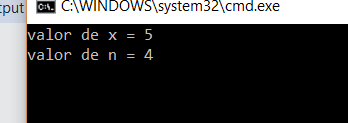
Ahora como hago si quiero trabajar dentro de funciones y modificar el valor de n, pasando así por valor, como hicimos en el ejemplo anterior no nos sirve para nada, pero si usamos punteros, los cuales sirven para estos casos, los mismos permiten almacenar una dirección de memoria de una variable de main como en este caso.
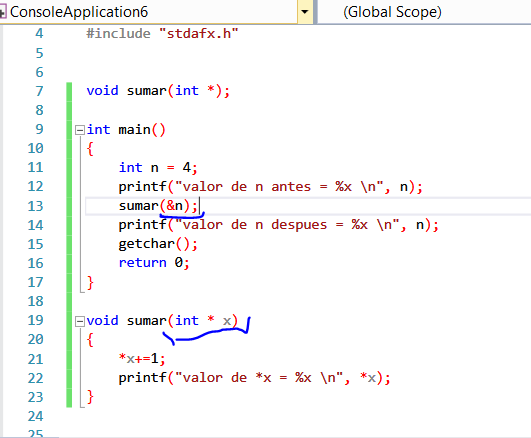
La función sumar está definida con un solo un argumento x que es un puntero a un entero.
Y cuando se la llama se le pasa
sumar(&n);
Sabemos que un puntero almacena direcciones de memoria y en este caso le pasamos la dirección de memoria de n que apunta a un entero, así que está todo bien.
void sumar(int * x)
{
*x+=1;
printf("valor de *x = %x \n", *x);
}
Vemos que incrementamos el contenido de x, con lo cual como x tenía la dirección de memoria de n, estamos afectando al valor de n, que a pesar de no tener validez aquí, estamos trabajando con ella, al usar un puntero y al salir su valor habrá cambiado.
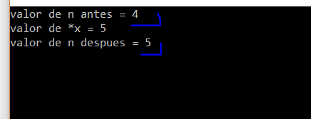
Así que n cambio y dentro de main no le hicimos ningún cambio, ni hay referencia a ninguna operación sobre ella, es que al pasar la dirección de la misma como argumento y trabajar dentro de la función con un puntero que la recibió, accedemos a su valor y lo modificamos igualmente.
Veámoslo en IDA.
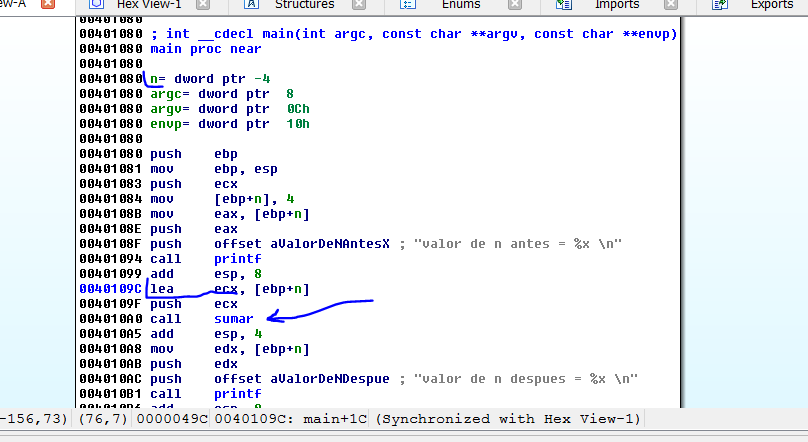
Vemos que se inicializa n al inicio cuando se le asigna el valor 4, y luego se pasa la dirección de n como argumento a la función sumar (y no se pasa el valor).
Veamos la función.
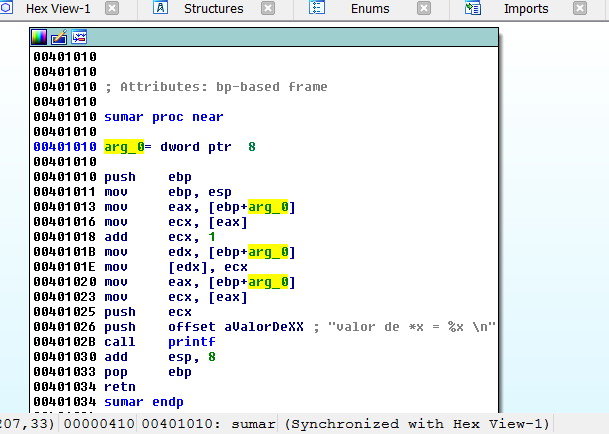
arg_0 debería ser un puntero a un entero.
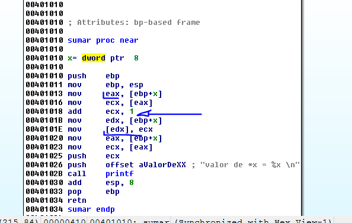
Vemos que allí lee x que es la dirección de memoria de n, y lo pasa a EAX, luego lee el contenido y lo incrementa en 1 y lo vuelve a guardar en el contenido de EDX.
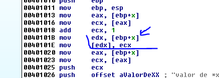
Allí el valor incrementado de ECX se guarda en el contenido de EDX que es la dirección de memoria de n.
Por lo tanto vemos que pasar direcciones por medio de punteros nos sirve para trabajar con los valores de variables de otro ámbito, que si no aquí no podría cambiar.
Veamos el código con f5.
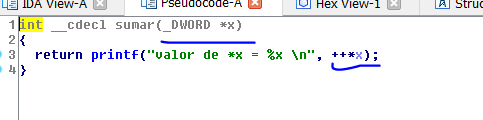
Esta vez no puede optimizar nada x es un puntero a un entero (DWORD) allí lo muestra, podemos igual en el listado cambiar el tipo de dato de x.
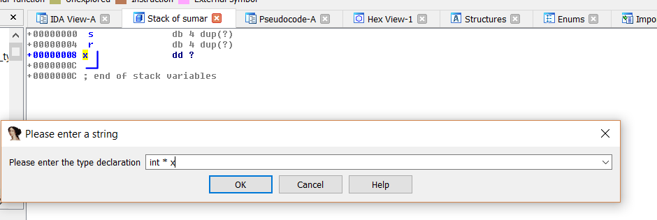
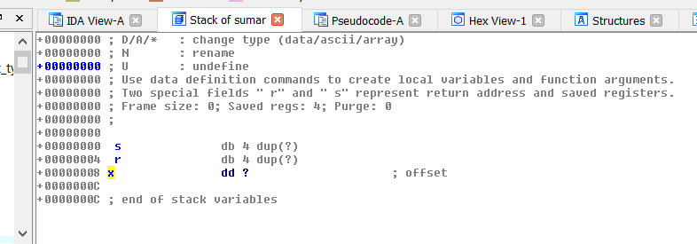
Y veamos cuando hago set type en la función sumar que dice.
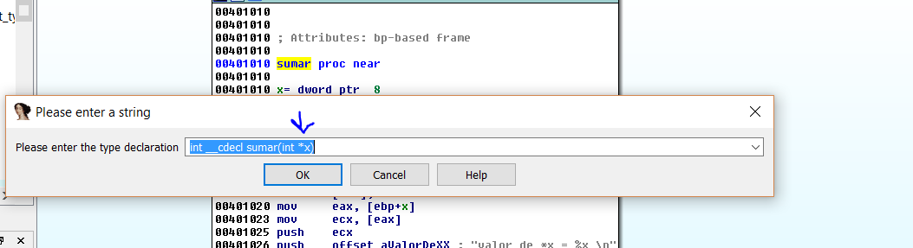
Vemos que está bien declarada la variable ahora como puntero.
int * x
Despues de eso si apreto F5 queda aun mejor.
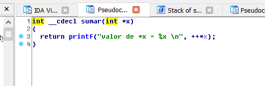
Hay una forma más de hacer esto sin usar punteros, usando lo que llaman en C++ referencias.
Además de los punteros el lenguaje C++ tiene otra característica que son las referencias, una referencia es por así decirlo un alias o etiqueta de una variable.
int n = 4;int &ref_n = n;
al poner & delante de una variable en la declaración, lo que hago es crear un alias de la misma variable que incluso comparten la misma dirección de memoria.
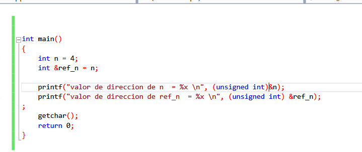
Si lo ejecuto
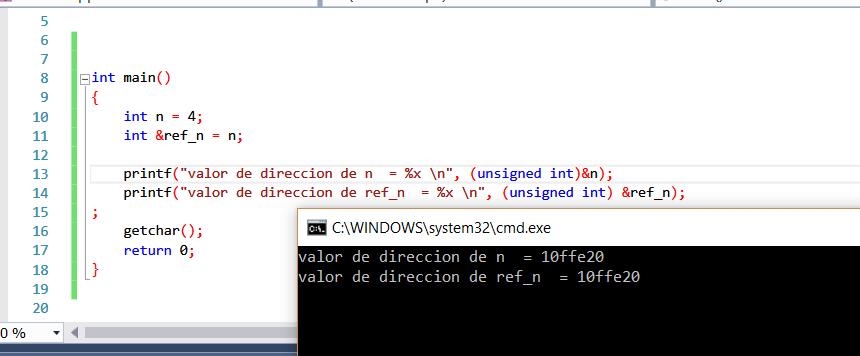
De esa forma si tengo dos variables que comparten la misma posición de memoria, si cambio una cambio otra.
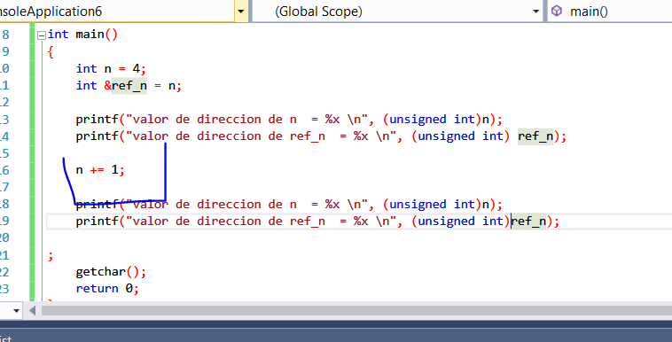
Así que cuando cambio una cambiara la otra.
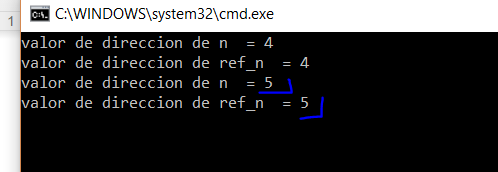
Así que eso me servirá más que nada para escribir más cómodamente la función sumar sin usar punteros.
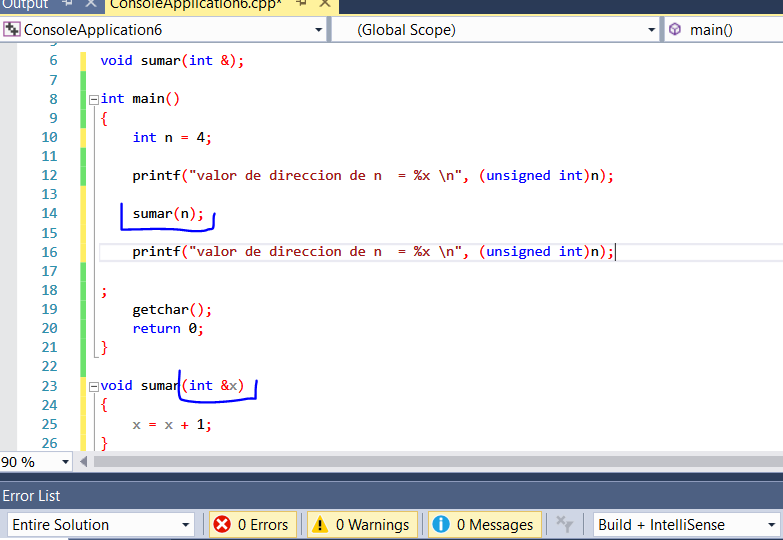
Vemos que le paso el valor de n pero la función crea un alias de n que comparten la misma dirección, así que modificar x es lo mismo que modificar n.
void sumar(int &x)
{
x = x + 1;
}
Vemos que no tenemos que lidiar con contenidos ni nada solo directamente, cambiar el valor.
Funciona veámoslo en IDA.
La alegría se esfumó
Vemos que todo eso es algo para ayudar a escribir más fácilmente el código fuente, pero a bajo nivel sigue usando punteros, vemos que no pasa el valor de n sino la dirección como antes.
Y dentro de la función es lo mismo que antes un puntero. al cual se le incrementa el contenido.
Así que el alias o referencia es muy cómodo para escribir código, pero a bajo nivel solo debemos lidiar con punteros.:-(
Hasta la parte 29
Ricardo Narvaja